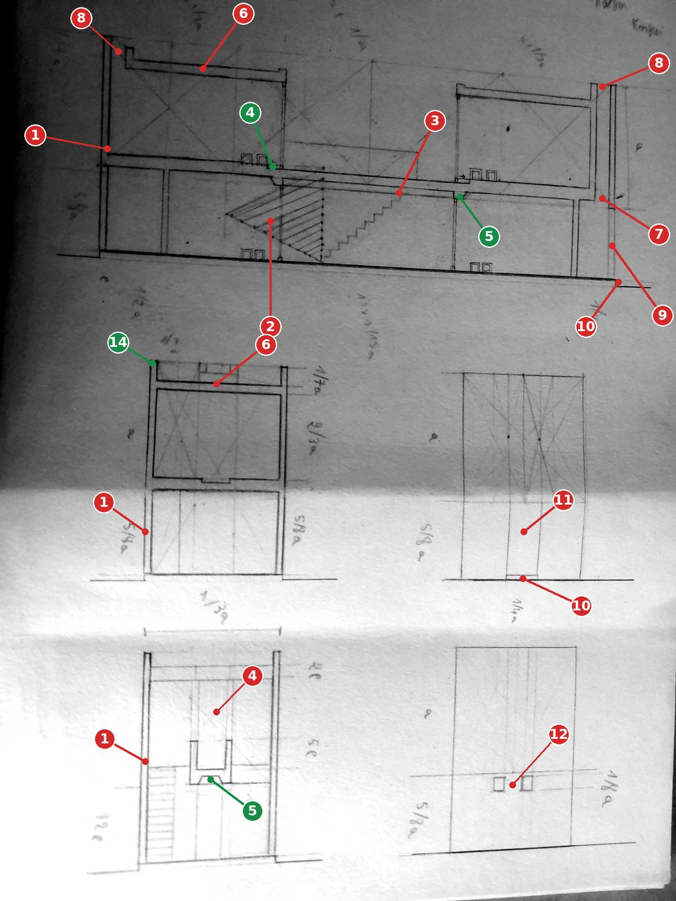
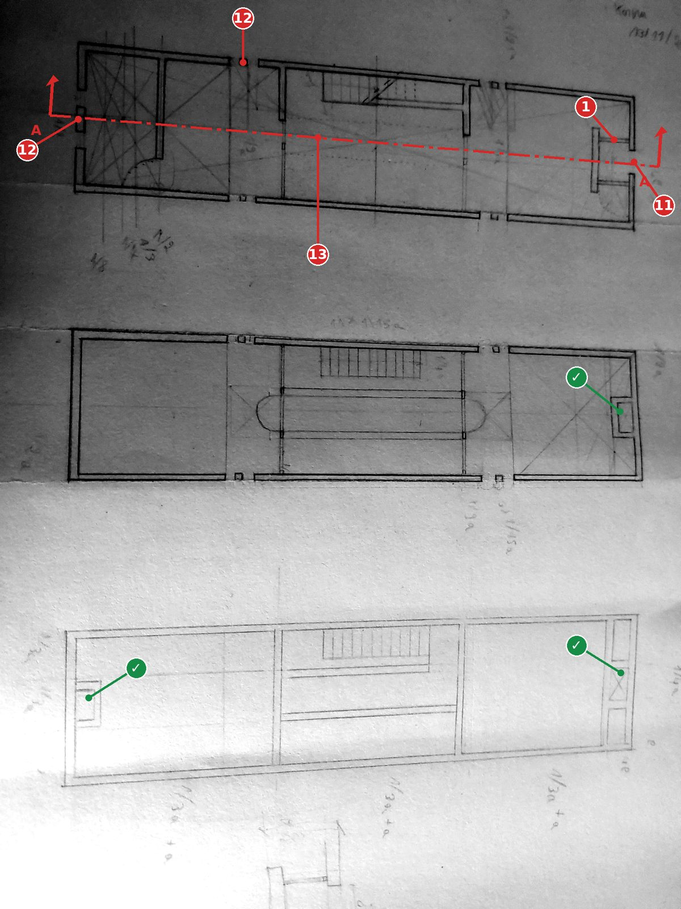

<title>Corrections du carnet</title>
<meta name="claude:viewport-fit-sides" content="cover">
<link rel="stylesheet" href="https://fonts.googleapis.com/css2?family=Archivo:wght@500;700;800&family=Source+Serif+4:opsz,wght@8..60,400;8..60,600&family=IBM+Plex+Mono:wght@400;600&display=swap">
<style>
/* mise en page : une colonne de lecture ; les photos annotées d'abord, puis une fiche par remarque (même numéro) */
:root {
  --bg: #f5f6f4; --carte: #ffffff; --encre: #1c2120; --doux: #5d6663; --ligne: #d9ddda;
  --rouge: #c62828; --vert: #1b7f4b; --cons: #9aa29e; --poche: #e3e6e3;
  --f-titre: "Archivo", "Helvetica Neue", Arial, sans-serif;
  --f-texte: "Source Serif 4", Georgia, serif;
  --f-mono: "IBM Plex Mono", ui-monospace, monospace;
}
@media (prefers-color-scheme: dark) { :root:not([data-theme="light"]) {
  --bg: #141818; --carte: #1c2121; --encre: #e4e8e6; --doux: #9aa4a0; --ligne: #313838;
  --rouge: #ff6f61; --vert: #52c98d; --cons: #66706c; --poche: #2b3231; color-scheme: dark } }
:root[data-theme="dark"] {
  --bg: #141818; --carte: #1c2121; --encre: #e4e8e6; --doux: #9aa4a0; --ligne: #313838;
  --rouge: #ff6f61; --vert: #52c98d; --cons: #66706c; --poche: #2b3231; color-scheme: dark }
body { background: var(--bg); color: var(--encre); font-family: var(--f-texte); font-size: 17px; line-height: 1.5; }
.page { max-width: 980px; margin: 0 auto; padding-block: 28px 64px; padding-left: max(16px, env(safe-area-inset-left, 0px)); padding-right: max(16px, env(safe-area-inset-right, 0px)); display: grid; gap: 40px; }
h1, h2, h3 { font-family: var(--f-titre); text-wrap: balance; margin: 0; line-height: 1.15; }
h1 { font-size: clamp(30px, 6vw, 44px); font-weight: 800; letter-spacing: -0.01em; }
h2 { font-size: 24px; font-weight: 800; }
h3 { font-size: 18px; font-weight: 700; display: flex; gap: 10px; align-items: center; }
p { margin: 0; }
.chapeau { display: grid; gap: 12px; max-width: 68ch; }
.sur { font-family: var(--f-mono); font-size: 12px; letter-spacing: 0.08em; text-transform: uppercase; color: var(--doux); }
.legende-cle { display: flex; flex-wrap: wrap; gap: 8px 20px; font-size: 15px; color: var(--doux); }
.pastille { flex: none; width: 28px; height: 28px; border-radius: 50%; display: inline-grid; place-items: center; color: #fff; font-family: var(--f-titre); font-weight: 800; font-size: 14px; background: var(--rouge); }
.pastille.ok { background: var(--vert); }
.cle { display: inline-flex; gap: 8px; align-items: center; }
section { display: grid; gap: 18px; }
.photos { display: grid; grid-template-columns: repeat(auto-fit, minmax(300px, 1fr)); gap: 18px; }
figure { margin: 0; display: grid; gap: 8px; min-width: 0; }
figure img { width: 100%; height: auto; border-radius: 6px; border: 1px solid var(--ligne); display: block; }
figcaption { font-size: 14px; color: var(--doux); }
.index { display: grid; grid-template-columns: repeat(auto-fit, minmax(260px, 1fr)); gap: 6px 24px; padding: 0; margin: 0; list-style: none; }
.index li { display: flex; gap: 10px; align-items: flex-start; font-size: 15.5px; min-width: 0; }
.index a { color: inherit; text-decoration-color: var(--ligne); text-underline-offset: 3px; }
.index .pastille { width: 24px; height: 24px; font-size: 12.5px; }
.fiches { display: grid; gap: 18px; }
.fiche { background: var(--carte); border: 1px solid var(--ligne); border-radius: 8px; padding: 18px; display: grid; grid-template-columns: minmax(0, 1.25fr) minmax(0, 1fr); gap: 18px 24px; align-items: start; }
.fiche h3 { grid-column: 1 / -1; }
.fiche .texte { display: grid; gap: 10px; font-size: 16px; min-width: 0; }
.fiche .schema { min-width: 0; overflow-x: auto; }
.fiche svg { width: 100%; height: auto; display: block; }
.prof { font-style: italic; color: var(--doux); border-left: 3px solid var(--ligne); padding-left: 10px; }
.mm { font-family: var(--f-mono); font-size: 13.5px; color: var(--doux); }
.mm b { color: var(--encre); font-weight: 600; }
.doute { font-size: 15px; color: var(--doux); }
.doute b { color: var(--encre); }
@media (max-width: 720px) { .fiche { grid-template-columns: 1fr; } }
.note { background: var(--carte); border: 1px solid var(--ligne); border-radius: 8px; padding: 16px 18px; display: grid; gap: 8px; font-size: 15.5px; }
a:focus-visible { outline: 2px solid var(--rouge); outline-offset: 2px; }

/* les traits des schémas */
svg text { font-family: var(--f-mono); font-size: 10.5px; fill: var(--encre); }
svg .tr { fill: var(--rouge); } svg .tv { fill: var(--vert); } svg .td { fill: var(--doux); }
.F { stroke: var(--encre); stroke-width: 2.8; fill: var(--poche); stroke-linejoin: miter; }
.Fn { stroke: var(--encre); stroke-width: 2.8; fill: none; }
.M { stroke: var(--encre); stroke-width: 1.3; fill: none; }
.T { stroke: var(--encre); stroke-width: 0.7; fill: none; }
.C { stroke: var(--cons); stroke-width: 0.7; fill: none; stroke-dasharray: 4 3; }
.Cp { stroke: var(--cons); stroke-width: 0.7; fill: none; }
.R { stroke: var(--rouge); stroke-width: 1.6; fill: none; }
.Rd { stroke: var(--rouge); stroke-width: 1.8; fill: none; stroke-dasharray: 5 3; }
.V { stroke: var(--vert); stroke-width: 1.6; fill: none; }
.sol { stroke: var(--encre); stroke-width: 0.6; }
.fondR { fill: var(--rouge); fill-opacity: 0.14; }
</style>

<main class="page">
  <header class="chapeau">
    <span class="sur">Azuma House · Tadao Ando · séance 5</span>
    <h1>Corrections du carnet</h1>
    <p>Tes deux pages, annotées avec les remarques de la prof (enregistrement du cours). Chaque numéro sur la photo renvoie à une fiche plus bas : un schéma qui montre <b>comment le dessiner</b>.</p>
    <div class="legende-cle">
      <span class="cle"><span class="pastille">3</span> à corriger ou à ajouter</span>
      <span class="cle"><span class="pastille ok">4</span> c'est juste, garde-le</span>
    </div>
  </header>

  <section aria-labelledby="t-photos">
    <h2 id="t-photos">Ton carnet, annoté</h2>
    <div class="photos">
      <figure>
        
        <figcaption>Coupe longitudinale (en haut), coupe C et façade B (au milieu), coupe E et façade C (en bas).</figcaption>
      </figure>
      <figure>
        
        <figcaption>Plans : rez-de-chaussée, étage, toiture. En rouge, l'exemple du <b>trait de coupe A</b> à ajouter.</figcaption>
      </figure>
    </div>
    <ol class="index">
      <li><span class="pastille">1</span><a href="#f1">Coupé = trait très fort</a></li>
      <li><span class="pastille">2</span><a href="#f2">Construction trop appuyée</a></li>
      <li><span class="pastille">3</span><a href="#f3">Escalier : 12 contremarches</a></li>
      <li><span class="pastille">4</span><a href="#f4">Porte et baie vitrée côté patio</a></li>
      <li><span class="pastille ok">5</span><a href="#f5">L'élément sous la passerelle</a></li>
      <li><span class="pastille">6</span><a href="#f6">Dalle = e + e/3</a></li>
      <li><span class="pastille">7</span><a href="#f7">Le bout côté rue (7 · 8 · 9 · 10)</a></li>
      <li><span class="pastille">11</span><a href="#f11">La porte vitrée : 2 cadres + encoche</a></li>
      <li><span class="pastille">12</span><a href="#f12">Les fenêtres : carrées, cadre sur 4 côtés</a></li>
      <li><span class="pastille">13</span><a href="#f13">Trait de coupe sur les plans</a></li>
      <li><span class="pastille ok">14</span><a href="#f14">L'acrotère</a></li>
    </ol>
  </section>

  <section aria-labelledby="t-fiches">
    <h2 id="t-fiches">Comment le dessiner</h2>
    <div class="fiches">

      <!-- 1 -->
      <article class="fiche" id="f1">
        <h3><span class="pastille">1</span>Ce qui est coupé : trait très fort</h3>
        <div class="schema">
          <svg viewBox="0 0 340 210" role="img" aria-label="Coupe : murs et dalle coupés en trait fort, escalier vu en trait fin, construction très légère">
            <line class="C" x1="50" y1="30" x2="270" y2="180"/><line class="C" x1="270" y1="30" x2="50" y2="180"/>
            <rect class="F" x="40" y="30" width="10" height="150"/>
            <rect class="F" x="270" y="30" width="10" height="150"/>
            <rect class="F" x="50" y="92" width="220" height="13"/>
            <polyline class="T" points="120,180 120,170 132,170 132,160 144,160 144,150 156,150 156,140 168,140 168,130 180,130 180,120 192,120 192,110 204,110 204,105"/>
            <line class="F" x1="20" y1="181" x2="320" y2="181" style="fill:none"/>
            <line class="R" x1="45" y1="60" x2="95" y2="52"/><text class="tr" x="98" y="50">coupé : très fort</text>
            <line class="R" x1="160" y1="146" x2="214" y2="158"/><text class="tr" x="217" y="161">vu : fin</text>
            <line class="R" x1="105" y1="68" x2="150" y2="30"/><text class="tr" x="153" y="28">construction : très léger</text>
          </svg>
        </div>
        <div class="texte">
          <p class="prof">« Je ne vois pas de mur, je le vois en très fin. » · « C'est vu, non coupé : ça c'est trop fort. »</p>
          <p>Repasse <b>en dernier</b>, au crayon gras, tout ce que la coupe traverse : murs, dalles, passerelle. Dans tes coupes, les murs du rez-de-chaussée sont aussi fins que ce qui est vu.</p>
          <p>Sur le plan, les <b>bras du sas</b> sont des murs : même épaisseur e et trait fort que le mur du fond du sas.</p>
        </div>
      </article>

      <!-- 2 -->
      <article class="fiche" id="f2">
        <h3><span class="pastille">2</span>La construction de l'escalier : juste, mais trop appuyée</h3>
        <div class="schema">
          <svg viewBox="0 0 340 190" role="img" aria-label="À gauche le triangle de Thalès hachuré trop foncé, à droite le même en traits très légers">
            <g>
              <polygon class="M" points="30,150 140,40 140,150" style="stroke-width:2"/>
              <g class="M" style="stroke-width:1.8">
                <line x1="130" y1="50" x2="130" y2="150"/><line x1="120" y1="60" x2="120" y2="150"/><line x1="110" y1="70" x2="110" y2="150"/><line x1="100" y1="80" x2="100" y2="150"/><line x1="90" y1="90" x2="90" y2="150"/><line x1="80" y1="100" x2="80" y2="150"/><line x1="70" y1="110" x2="70" y2="150"/><line x1="60" y1="120" x2="60" y2="150"/><line x1="50" y1="130" x2="50" y2="150"/>
              </g>
              <text class="tr" x="30" y="175">trop appuyé : on croit</text><text class="tr" x="30" y="187">que c'est coupé</text>
            </g>
            <g>
              <polygon class="Cp" points="190,150 300,40 300,150"/>
              <g class="Cp"><line x1="290" y1="50" x2="290" y2="150"/><line x1="280" y1="60" x2="280" y2="150"/><line x1="270" y1="70" x2="270" y2="150"/><line x1="260" y1="80" x2="260" y2="150"/><line x1="250" y1="90" x2="250" y2="150"/><line x1="240" y1="100" x2="240" y2="150"/><line x1="230" y1="110" x2="230" y2="150"/><line x1="220" y1="120" x2="220" y2="150"/><line x1="210" y1="130" x2="210" y2="150"/></g>
              <text class="tv" x="190" y="175">juste : très léger,</text><text class="tv" x="190" y="187">sans hachures</text>
            </g>
          </svg>
        </div>
        <div class="texte">
          <p class="prof">« La construction est correcte. Il n'y a pas de problème… Tu appuies trop. » · « Il y a beaucoup de croisements. »</p>
          <p>Garde la construction, mais <b>au crayon dur, à peine visible</b>. Elle doit se voir de près, pas de loin. Le dessin de la coupe (le trait fort) doit rester ce qu'on lit en premier.</p>
        </div>
      </article>

      <!-- 3 -->
      <article class="fiche" id="f3">
        <h3><span class="pastille">3</span>L'escalier : on compte 12 contremarches</h3>
        <div class="schema">
          <svg viewBox="0 0 360 215" role="img" aria-label="Profil d'escalier : 12 contremarches numérotées, la 12e arrive au carrelage de la passerelle, puis une bordure monte au carrelage de la chambre">
            <line class="sol" x1="10" y1="195" x2="350" y2="195"/>
            <polyline class="M" points="30,195 30,184 46,184 46,173 62,173 62,162 78,162 78,151 94,151 94,140 110,140 110,129 126,129 126,118 142,118 142,107 158,107 158,96 174,96 174,85 190,85 190,74 206,74 206,63"/>
            <g class="td" style="font-size:8.5px">
              <text x="21" y="193">1</text><text x="37" y="182">2</text><text x="53" y="171">3</text><text x="69" y="160">4</text><text x="85" y="149">5</text><text x="101" y="138">6</text><text x="117" y="127">7</text><text x="133" y="116">8</text><text x="149" y="105">9</text><text x="162" y="94">10</text><text x="178" y="83">11</text><text x="194" y="72" class="tr" style="font-weight:600">12</text>
            </g>
            <rect class="F" x="206" y="63" width="94" height="14"/>
            <rect class="F" x="300" y="54" width="50" height="23"/>
            <line class="R" x1="206" y1="63" x2="300" y2="63" style="stroke-width:2.4"/>
            <line class="R" x1="250" y1="62" x2="232" y2="32"/><text class="tr" x="150" y="22">carrelage de la passerelle</text><text class="tr" x="150" y="34">= haut de la 12ᵉ contremarche</text>
            <line class="R" x1="303" y1="58" x2="290" y2="112"/><text class="tr" x="230" y="125">bordure = e</text><text class="tr" x="230" y="137">(sol de la chambre)</text>
            <text class="td" x="40" y="212">11 marches (on ne compte pas celle où l'on marche)</text>
          </svg>
        </div>
        <div class="texte">
          <p class="prof">« Il y a douze contremarches. Quand on compte les escaliers, on ne compte pas la marche sur laquelle on marche. On compte la hauteur. »</p>
          <p>11 marches de 1/15 a, mais <b>12 hauteurs</b>. La dernière hauteur tombe pile sur <b>la ligne du carrelage de la passerelle</b> : c'est la même ligne.</p>
          <p>Ensuite, la <b>bordure</b> monte de e jusqu'au carrelage de la chambre : tu l'as déjà dessinée (fiche 4).</p>
        </div>
      </article>

      <!-- 4 -->
      <article class="fiche" id="f4">
        <h3><span class="pastille">4</span>Côté patio : la porte descend, la baie reste en haut</h3>
        <div class="schema">
          <svg viewBox="0 0 340 250" role="img" aria-label="Façade de la chambre vue du patio : porte vitrée au milieu qui descend au carrelage de la passerelle, baies vitrées de chaque côté posées sur un muret au niveau du carrelage de la chambre">
            <rect class="F" x="20" y="30" width="13" height="190"/><rect class="F" x="287" y="30" width="13" height="190"/>
            <line class="T" x1="33" y1="40" x2="287" y2="40"/>
            <rect class="M" x="36" y="52" width="77" height="118"/><rect class="T" x="43" y="59" width="63" height="104"/>
            <rect class="M" x="207" y="52" width="77" height="118"/><rect class="T" x="214" y="59" width="63" height="104"/>
            <rect class="F" x="36" y="170" width="77" height="11" style="fill:var(--poche)"/>
            <rect class="F" x="207" y="170" width="77" height="11" style="fill:var(--poche)"/>
            <rect class="M" x="120" y="52" width="80" height="129" style="stroke-width:2"/>
            <rect class="M" x="127" y="59" width="66" height="122"/>
            <rect class="T" x="133" y="65" width="54" height="110"/>
            <rect class="F" x="113" y="181" width="94" height="16"/>
            <line class="C" x1="10" y1="170" x2="330" y2="170"/><line class="C" x1="10" y1="181" x2="330" y2="181"/>
            <text class="td" x="292" y="166" style="font-size:9px">chambre</text><text class="td" x="292" y="193" style="font-size:9px">passerelle</text>
            <line class="R" x1="160" y1="120" x2="160" y2="16"/><text class="tr" x="120" y="12">porte vitrée : 2 cadres + verre</text>
            <line class="R" x1="160" y1="181" x2="160" y2="225"/><text class="tr" x="88" y="238">descend au carrelage de la passerelle</text>
            <line class="R" x1="75" y1="176" x2="62" y2="212"/><text class="tr" x="10" y="222">muret (rattrapage)</text>
            <line class="R" x1="245" y1="110" x2="268" y2="16"/><text class="tr" x="226" y="28" style="font-size:9.5px">baie : cadre 4 côtés</text>
          </svg>
        </div>
        <div class="texte">
          <p class="prof">« La baie vitrée, elle est par rapport au carrelage de la chambre. Ils ont fait un rattrapage avec de la maçonnerie. Mais la porte, elle va jusqu'au carrelage de la passerelle. »</p>
          <p>C'est ce qu'on voit derrière la passerelle dans ta <b>coupe E</b> : tes deux bandes verticales au-dessus du pont sont <b>le cadre de cette porte</b> (j'avais eu tort de te dire de les déplacer). Complète avec les deux cadres, le verre, et les baies de chaque côté sur leur muret.</p>
          <p class="doute">Schéma de principe : les largeurs exactes de la porte et des baies, <b>vérifie-les sur les photos réelles</b> de la maison, comme la prof l'a demandé.</p>
        </div>
      </article>

      <!-- 5 -->
      <article class="fiche" id="f5">
        <h3><span class="pastille ok">5</span>L'élément sous la passerelle : c'est juste</h3>
        <div class="schema">
          <svg viewBox="0 0 340 170" role="img" aria-label="Passerelle coupée en trait fort, et sous elle l'élément vu : un rectangle, deux traits inclinés et un trait qui ferme, en trait moyen">
            <rect class="F" x="90" y="40" width="160" height="22"/>
            <polyline class="M" points="125,62 140,86 200,86 215,62"/>
            <line class="M" x1="140" y1="86" x2="200" y2="86"/>
            <line class="V" x1="250" y1="51" x2="290" y2="30"/><text class="tv" x="240" y="22">coupé : fort</text>
            <line class="V" x1="207" y1="76" x2="262" y2="110"/><text class="tv" x="214" y="124">vu : trait moyen</text>
            <text class="td" x="30" y="150">rectangle → traits inclinés → trait qui ferme</text>
          </svg>
        </div>
        <div class="texte">
          <p class="prof">« Je vois mon premier rectangle, ensuite ces traits inclinés, et ensuite cette ligne qui ferme. »</p>
          <p>Tu l'as dans ta coupe E et dans la coupe longue : <b>garde-le</b> (j'avais eu tort de le mettre en doute). Il est <b>vu</b>, pas coupé : trait moyen, pas fort.</p>
          <p>Attention à ne pas laisser un trait de construction qui ressemble à un vrai trait : <span class="prof" style="border:0;padding:0">« Ce trait-là, il n'existe pas. C'est un trait de construction. »</span></p>
        </div>
      </article>

      <!-- 6 -->
      <article class="fiche" id="f6">
        <h3><span class="pastille">6</span>L'épaisseur des dalles : e + e/3</h3>
        <div class="schema">
          <svg viewBox="0 0 450 200" role="img" aria-label="Agrandissement : le mur d'épaisseur e, la dalle d'épaisseur e plus un tiers de e, construit par Thalès">
            <rect class="F" x="30" y="20" width="40" height="170"/>
            <rect class="F" x="70" y="40" width="200" height="53.3"/>
            <line class="T" x1="30" y1="198" x2="70" y2="198"/><text x="44" y="194" style="font-size:10px">e</text>
            <line class="R" x1="270" y1="40" x2="270" y2="80"/>
            <path class="C" d="M 230 80 A 40 40 0 0 1 270 40"/>
            <line class="Cp" x1="270" y1="40" x2="330" y2="100"/>
            <circle cx="290" cy="60" r="2" class="tr"/><circle cx="310" cy="80" r="2" class="tr"/><circle cx="330" cy="100" r="2" class="tr"/>
            <line class="Cp" x1="330" y1="100" x2="270" y2="80"/>
            <line class="Cp" x1="290" y1="60" x2="270" y2="53.3"/><line class="Cp" x1="310" y1="80" x2="270" y2="66.7"/>
            <line class="R" x1="270" y1="80" x2="270" y2="93.3" style="stroke-width:3"/>
            <text class="tr" x="282" y="40">e (reporté au compas)</text>
            <text class="tr" x="338" y="104">3 pas égaux</text>
            <text class="tr" x="282" y="122">+ e/3 (Thalès)</text>
            <line class="R" x1="272" y1="88" x2="280" y2="116"/>
            <text x="110" y="72">dalle = 4/3 e</text>
            <text class="td" x="80" y="150">montre-le sur la « structure cachée »</text>
            <text class="td" x="80" y="163">de la coupe, en petit agrandissement</text>
          </svg>
        </div>
        <div class="texte">
          <p class="prof">« L'épaisseur du mur plus un tiers… une fois un tiers. L'épaisseur du mur, l'épaisseur des dalles, je dois les voir sur la structure cachée de la coupe. »</p>
          <p>Prends e au compas sur le mur, reporte-le sur la dalle, partage-le en 3 (Thalès), et ajoute un tiers : <b>dalle = 4/3 e ≈ 25 cm</b>. C'est notre « 1/16 a » du toit, construit proprement.</p>
          <p class="mm">Dans ton carnet : e = <b>2,6 mm</b> · e/3 = <b>0,9 mm</b> · dalle = <b>3,5 mm</b>.</p>
        </div>
      </article>

      <!-- 7-10 -->
      <article class="fiche" id="f7">
        <h3><span class="pastille">7</span>Le bout côté rue de la coupe longue (7 · 8 · 9 · 10)</h3>
        <div class="schema">
          <svg viewBox="0 0 420 300" role="img" aria-label="Bout côté rue de la coupe longitudinale : plancher sous la douche à ajouter, vitrage du lanterneau, porte d'entrée coupée dans le mur, marche extérieure de 2e">
            <polyline class="T" points="150,30 144,40 156,50 150,60"/>
            <rect class="F" x="150" y="41.4" width="147.9" height="9.4"/>
            <rect class="F" x="297.9" y="30" width="7" height="118.6"/>
            <rect class="F" x="322.9" y="20" width="7.1" height="150"/>
            <line class="R" x1="304.9" y1="31" x2="322.9" y2="31" style="stroke-width:2.2"/>
            <rect class="F" x="150" y="148.6" width="147.9" height="14.3"/>
            <rect class="F fondR" x="297.9" y="148.6" width="25" height="14.3" style="stroke:var(--rouge);stroke-dasharray:4 2"/>
            <rect class="F" x="276.4" y="162.9" width="7.2" height="93.7"/>
            <rect class="F" x="322.9" y="170" width="7.1" height="4"/>
            <rect class="M" x="325.4" y="174" width="2.2" height="82.6"/>
            <rect class="F" x="150" y="256.6" width="180" height="7.2"/>
            <polyline class="Fn" points="330,256.6 344.3,256.6 344.3,268 412,268"/>
            <line class="sol" x1="150" y1="263.8" x2="330" y2="263.8"/>
            <line class="T" x1="330" y1="256.6" x2="330" y2="268"/>
            <text class="td" x="180" y="215" style="font-size:9.5px">séjour / sas</text><text class="td" x="200" y="105" style="font-size:9.5px">chambre</text>
            <g>
              <circle cx="235" cy="182" r="9" class="tr"/><text x="235" y="185.5" text-anchor="middle" style="fill:#fff;font-weight:600;font-size:10px">7</text>
              <line class="R" x1="243" y1="178" x2="300" y2="158"/>
              <circle cx="380" cy="34" r="9" class="tr"/><text x="380" y="37.5" text-anchor="middle" style="fill:#fff;font-weight:600;font-size:10px">8</text>
              <line class="R" x1="371" y1="33" x2="318" y2="31"/>
              <circle cx="385" cy="205" r="9" class="tr"/><text x="385" y="208.5" text-anchor="middle" style="fill:#fff;font-weight:600;font-size:10px">9</text>
              <line class="R" x1="376" y1="205" x2="330" y2="210"/>
              <circle cx="385" cy="245" r="9" class="tr"/><text x="385" y="248.5" text-anchor="middle" style="fill:#fff;font-weight:600;font-size:10px">10</text>
              <line class="R" x1="377" y1="250" x2="346" y2="262"/>
            </g>
            <line class="T" x1="330" y1="285" x2="344.3" y2="285"/><text x="327" y="297" style="font-size:9.5px">2e</text>
            <line class="C" x1="290" y1="170" x2="340" y2="170"/><text class="td" x="250" y="173" style="font-size:9px">ligne a</text>
          </svg>
        </div>
        <div class="texte">
          <p><span class="pastille" style="width:22px;height:22px;font-size:11px">7</span> <b>Plancher sous la douche</b> : ta dalle s'arrête au mur de la douche. Elle doit continuer jusqu'au mur de la façade (la douche est à l'étage).</p>
          <p><span class="pastille" style="width:22px;height:22px;font-size:11px">8</span> <b>Lanterneaux</b> : tu as bien ouvert le toit (au-dessus de la douche et de la salle de bain). Ajoute le <b>trait fin du vitrage</b> en haut.</p>
          <p><span class="pastille" style="width:22px;height:22px;font-size:11px">9</span> <b>Porte d'entrée</b> : ta coupe passe par l'axe, donc elle coupe la porte. Le mur de façade s'arrête à la <b>ligne a</b> (linteau) ; en dessous, la porte vitrée coupée.</p>
          <p><span class="pastille" style="width:22px;height:22px;font-size:11px">10</span> <b>Marche dehors</b> : on avance de <b>2e</b> (5,3 mm), puis on descend. La façade va jusqu'au <b>trait le plus bas</b> (la rue).</p>
          <p class="prof">« J'avance de deux épaisseurs de mur qui représentent la petite marche, et on descend. La façade, elle va avec le trait le plus bas. »</p>
        </div>
      </article>

      <!-- 11 -->
      <article class="fiche" id="f11">
        <h3><span class="pastille">11</span>La porte vitrée : deux cadres, l'encoche, le verre</h3>
        <div class="schema">
          <svg viewBox="0 0 420 230" role="img" aria-label="À gauche la porte en plan : mur coupé, cadre fixe avec encoche, vantail et verre ; à droite la porte en façade : trois rectangles emboîtés et le seuil">
            <rect class="F" x="40" y="15" width="44" height="45"/><rect class="F" x="40" y="160" width="44" height="45"/>
            <polygon class="F" points="50,60 74,60 74,74 64,74 64,68 50,68" style="stroke-width:1.6"/>
            <polygon class="F" points="50,160 74,160 74,146 64,146 64,152 50,152" style="stroke-width:1.6"/>
            <rect class="M" x="64" y="74" width="7" height="72" style="fill:var(--carte)"/>
            <line class="T" x1="67.5" y1="78" x2="67.5" y2="142"/>
            <line class="R" x1="68" y1="70" x2="110" y2="48"/><text class="tr" x="113" y="46">encoche</text>
            <line class="R" x1="56" y1="64" x2="110" y2="30"/><text class="tr" x="113" y="28">cadre fixe</text>
            <line class="R" x1="71" y1="110" x2="110" y2="110"/><text class="tr" x="113" y="107">vantail</text><text class="tr" x="113" y="119">+ verre au milieu</text>
            <text class="td" x="30" y="225">en plan</text>
            <rect class="M" x="230" y="25" width="90" height="170" style="stroke-width:2"/>
            <rect class="M" x="238" y="33" width="74" height="162"/>
            <rect class="T" x="246" y="41" width="58" height="146"/>
            <line class="Fn" x1="205" y1="195" x2="345" y2="195" style="stroke-width:2"/>
            <rect class="T" x="226" y="195" width="98" height="5"/>
            <text class="td" x="230" y="225">en façade</text>
            <line class="R" x1="320" y1="60" x2="340" y2="60"/><text class="tr" x="344" y="63">1ᵉʳ cadre</text>
            <line class="R" x1="312" y1="95" x2="340" y2="95"/><text class="tr" x="344" y="98">2ᵉ cadre</text>
            <line class="R" x1="300" y1="130" x2="340" y2="130"/><text class="tr" x="344" y="133">vitrage</text>
          </svg>
        </div>
        <div class="texte">
          <p class="prof">« Le premier cadre, c'est celui qui est juste avec le carrelage. Et le deuxième cadre, il est un peu plus loin. C'est une porte vitrée. » · « Faire le cadre avec l'encoche. » · « Quand on dessine une porte, il faut faire le vitrage à l'intérieur. »</p>
          <p>Pour la <b>porte d'entrée</b> (façade B et plan du rez-de-chaussée) et les <b>portes du patio</b>. Dans ton plan, l'ouverture de l'entrée est vide ; dans ta façade B, la porte n'est pas fermée.</p>
          <p class="mm">Façade B : cadre <b>5e = 13,2 mm</b> · vantail <b>4e = 10,6 mm</b> · tête sur la ligne a (porte 5/8 a = 34,7 mm).</p>
        </div>
      </article>

      <!-- 12 -->
      <article class="fiche" id="f12">
        <h3><span class="pastille">12</span>Les fenêtres : carrées en façade, cadre sur 4 côtés</h3>
        <div class="schema">
          <svg viewBox="0 0 360 250" role="img" aria-label="En haut le plan du mur : le groupe de fenêtres commence sur la ligne du premier carré a et fait 1/5 a. Projections vers la façade ; au compas on rabat la largeur pour obtenir un carré ; cadre et vitrage">
            <text class="td" x="10" y="14">plan</text>
            <rect class="F" x="20" y="22" width="80" height="14"/><rect class="F" x="130" y="22" width="30" height="14"/><rect class="F" x="190" y="22" width="150" height="14"/>
            <line class="T" x1="100" y1="29" x2="130" y2="29"/><line class="T" x1="160" y1="29" x2="190" y2="29"/>
            <line class="R" x1="100" y1="6" x2="100" y2="22" style="stroke-width:2"/><text class="tr" x="104" y="11" style="font-size:9.5px">ligne du 1ᵉʳ carré a</text>
            <line class="T" x1="100" y1="46" x2="190" y2="46"/><text x="128" y="58" style="font-size:10px">1/5 a</text>
            <g class="C"><line x1="100" y1="36" x2="100" y2="200"/><line x1="130" y1="36" x2="130" y2="200"/><line x1="160" y1="36" x2="160" y2="200"/><line x1="190" y1="36" x2="190" y2="200"/></g>
            <text class="td" x="10" y="108">façade</text>
            <line class="C" x1="60" y1="120" x2="230" y2="120"/>
            <path class="R" d="M 130 120 A 30 30 0 0 1 100 150" style="stroke-dasharray:3 2"/>
            <line class="R" x1="100" y1="120" x2="130" y2="120"/>
            <rect class="M" x="100" y="120" width="30" height="30"/><rect class="T" x="104" y="124" width="22" height="22"/>
            <rect class="M" x="160" y="120" width="30" height="30"/><rect class="T" x="164" y="124" width="22" height="22"/>
            <line class="R" x1="96" y1="140" x2="62" y2="175"/><text class="tr" x="10" y="188">compas : la largeur</text><text class="tr" x="10" y="200">rabattue = la hauteur</text>
            <line class="R" x1="188" y1="135" x2="235" y2="160"/><text class="tr" x="210" y="172">cadre 4 côtés</text><text class="tr" x="210" y="184">+ vitrage</text>
            <line class="R" x1="230" y1="120" x2="262" y2="100"/><text class="tr" x="236" y="94" style="font-size:9.5px">hauteur : 1/4 a ?</text>
            <text class="td" x="100" y="232" style="font-size:9.5px">fente 1/15 a · plein 1/15 a · fente 1/15 a</text>
          </svg>
        </div>
        <div class="texte">
          <p class="prof">« Le démarrage de mes fenêtres, ça va avec mon premier grand carré. Cette distance, c'est un cinquième de A. » · « Des carrés, pas en plan : en façade. » · « Le cadre d'une fenêtre, il va sur les quatre côtés. »</p>
          <p><b>En largeur</b> : le groupe commence sur la ligne du premier carré a et fait 1/5 a (fente, plein, fente de 1/15 a). Tu le descends en façade par projection.</p>
          <p><b>En hauteur</b> : ce sont des carrés. Au compas, tu rabats la largeur à la verticale. Tes petits ⊓⊓ de la coupe longue vont dans ce sens.</p>
          <p class="mm">1/15 a = <b>3,7 mm</b> · 1/5 a = <b>11,1 mm</b> · 1/4 a = <b>13,9 mm</b></p>
          <p class="doute"><b>À demander à Charlène</b> : elle a placé la hauteur avec <b>1/4 a</b>, mais l'enregistrement ne dit pas depuis quelle ligne. Fais pareil pour les deux fenêtres de la <b>façade C</b> (cadre + vitrage) et mets le trait de verre dans toutes les ouvertures du plan.</p>
        </div>
      </article>

      <!-- 13 -->
      <article class="fiche" id="f13">
        <h3><span class="pastille">13</span>Le trait de coupe : seulement sur les plans</h3>
        <div class="schema">
          <svg viewBox="0 0 340 160" role="img" aria-label="Plan avec un trait de coupe mixte, des flèches aux deux bouts qui indiquent le sens du regard, et la lettre A">
            <rect class="M" x="40" y="45" width="260" height="70"/>
            <line class="R" x1="15" y1="80" x2="325" y2="80" style="stroke-width:2.4;stroke-dasharray:18 5 3 5"/>
            <line class="R" x1="15" y1="80" x2="15" y2="58" style="stroke-width:2.4"/><polygon class="tr" points="15,48 9,60 21,60"/>
            <line class="R" x1="325" y1="80" x2="325" y2="58" style="stroke-width:2.4"/><polygon class="tr" points="325,48 319,60 331,60"/>
            <text class="tr" x="10" y="100" style="font-size:14px;font-weight:600">A</text><text class="tr" x="320" y="100" style="font-size:14px;font-weight:600">A</text>
            <text class="td" x="40" y="138">les flèches = le sens où l'on regarde</text>
            <text class="td" x="40" y="152">sur la coupe : juste le titre « Coupe A »</text>
          </svg>
        </div>
        <div class="texte">
          <p class="prof">« Il n'y a pas de flèche sur la coupe. Que sur les plans. Vous mettez les traits de coupe. »</p>
          <p>Sur ton plan du rez-de-chaussée, dessine le trait de chaque coupe : <b>A</b> (la longue, exemple sur la photo), puis celles de C et E, chacune avec ses flèches et sa lettre. Écris le même nom sous chaque coupe.</p>
        </div>
      </article>

      <!-- 14 -->
      <article class="fiche" id="f14">
        <h3><span class="pastille ok">14</span>L'acrotère : tu l'as, et voici pourquoi il existe</h3>
        <div class="schema">
          <svg viewBox="0 0 340 150" role="img" aria-label="Toit avec deux acrotères ; l'eau de pluie coule vers une descente">
            <rect class="F" x="30" y="30" width="12" height="100"/><rect class="F" x="290" y="30" width="12" height="100"/>
            <rect class="F" x="42" y="52" width="248" height="14"/>
            <line class="T" x1="42" y1="48" x2="290" y2="52"/>
            <path class="V" d="M 120 40 L 160 42 M 154 38 L 160 42 L 153 46"/>
            <path class="V" d="M 220 41 L 262 43 M 256 39 L 262 43 L 255 47"/>
            <rect class="M" x="302" y="58" width="10" height="72"/>
            <text class="tv" x="60" y="24">le petit muret retient l'eau de pluie</text>
            <text class="tv" x="130" y="100">→ vers une descente</text>
          </svg>
        </div>
        <div class="texte">
          <p class="prof">« Pourquoi est-ce qu'on fait un bord quand on ne monte pas sur la terrasse ? L'eau de pluie. Il faut la canaliser vers un conduit. »</p>
          <p>Tes acrotères (1/7 a = 3e) sont bien là dans les coupes. La prof en parlait à quelqu'un qui l'avait oublié : garde-les et sache l'expliquer au jury.</p>
        </div>
      </article>

    </div>
  </section>

  <aside class="note" aria-label="Limites">
    <b>Ce que je ne peux pas confirmer</b>
    <p>La transcription s'arrête à 30 minutes (l'enregistrement en fait 42). La prof parlait à tout le groupe : certaines remarques ne te visaient peut-être pas.</p>
    <p>Elle dit aussi « il te manque l'étrier caché… c'est pénalisé » à propos de la passerelle coupée. C'est sûrement <b>« le trait caché »</b> mal transcrit (un élément caché, en pointillé). Demande à un camarade ce qu'elle montrait.</p>
  </aside>
</main>
